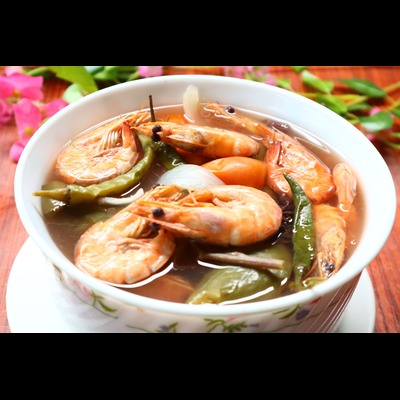

Top 1
Sinigang Shrimp
Shrimp sinigang is a classic Filipino sour soup made with fresh shrimp simmered in a tangy broth flavored by tamarind, tomatoes, and onions. It is often cooked with kangkong, radish, okra, and eggplant for a comforting balance of savory seafood and refreshing sourness.
View recipe